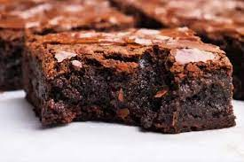

Bem-vindo ao Meu Site de Receitas
Confira nossas deliciosas receitas:
Pão de Queijo
Ingredientes
- 500g de polvilho doce
- 200ml de leite
- 100ml de óleo
- 2 ovos
- 150g de queijo muçarela ralado
- 100g de queijo parmesão ralado
- 1 colher (chá) de sal
Modo de Preparo
- Em uma panela, aqueça o leite e o óleo até ferver.
- Em uma tigela, coloque o polvilho doce e adicione a mistura fervente, mexendo até formar uma massa
homogênea.
- Deixe a massa esfriar um pouco e adicione os ovos, um de cada vez, mexendo bem após cada adição.
- Acrescente os queijos e o sal, e misture até obter uma massa uniforme.
- Preaqueça o forno a 180°C.
- Modele bolinhas com a massa e coloque em uma assadeira untada.
- Leve ao forno por aproximadamente 25 minutos, ou até que fiquem dourados.
- Sirva quente.
Receita de Brownie

Ingredientes
- 200g de chocolate meio amargo
- 150g de manteiga
- 200g de açúcar
- 3 ovos
- 1 colher de chá de essência de baunilha
- 100g de farinha de trigo
- 50g de cacau em pó
- 1 pitada de sal
Modo de Preparo
- Preaqueça o forno a 180°C. Unte uma forma quadrada com manteiga e farinha.
- Derreta o chocolate meio amargo e a manteiga em banho-maria ou no microondas.
- Em uma tigela, misture o açúcar, os ovos e a essência de baunilha até obter uma mistura homogênea.
- Adicione o chocolate derretido à mistura de ovos e açúcar e mexa bem.
- Peneire a farinha de trigo, o cacau em pó e o sal sobre a mistura de chocolate e misture delicadamente até incorporar todos os ingredientes.
- Despeje a massa na forma untada e leve ao forno por aproximadamente 25-30 minutos.
- Deixe esfriar antes de cortar em quadrados e servir.